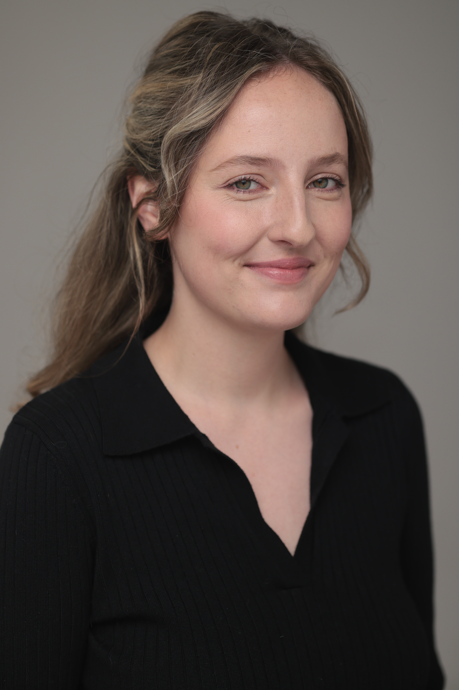
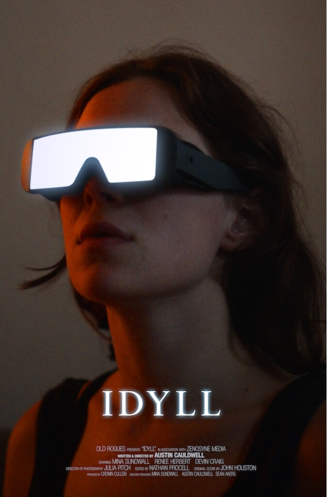
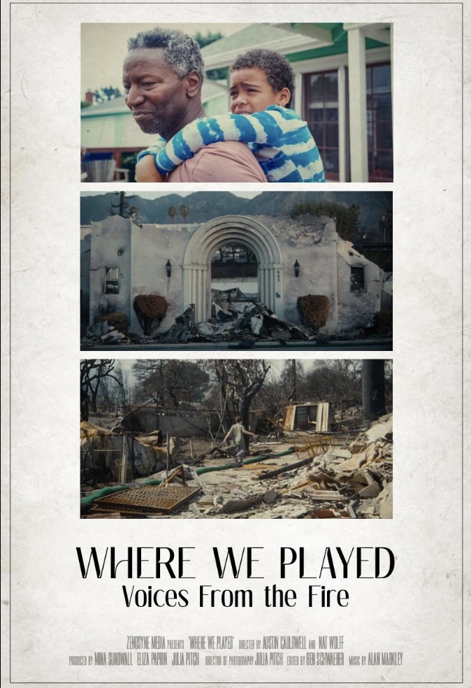
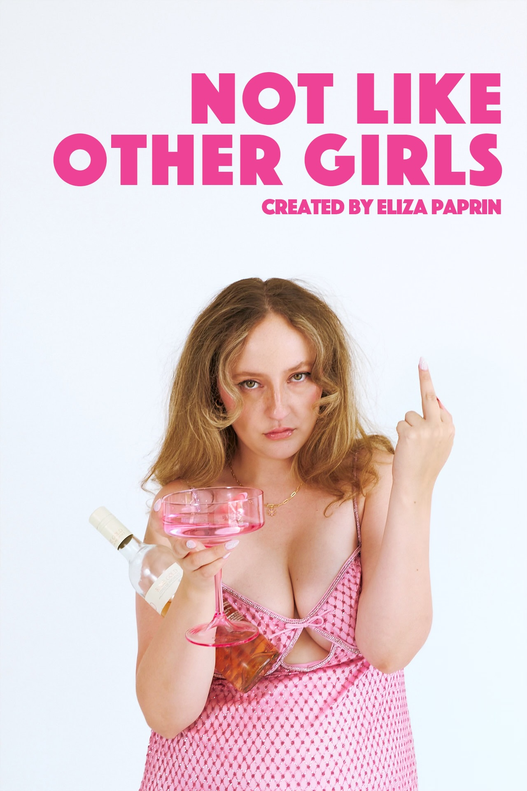
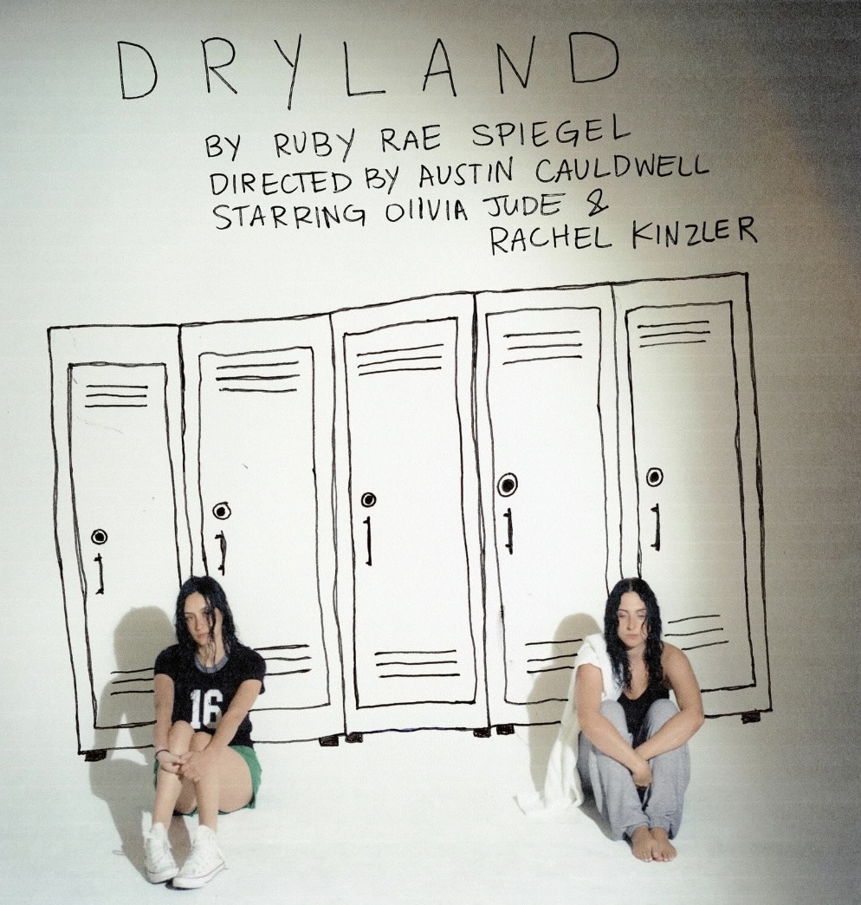
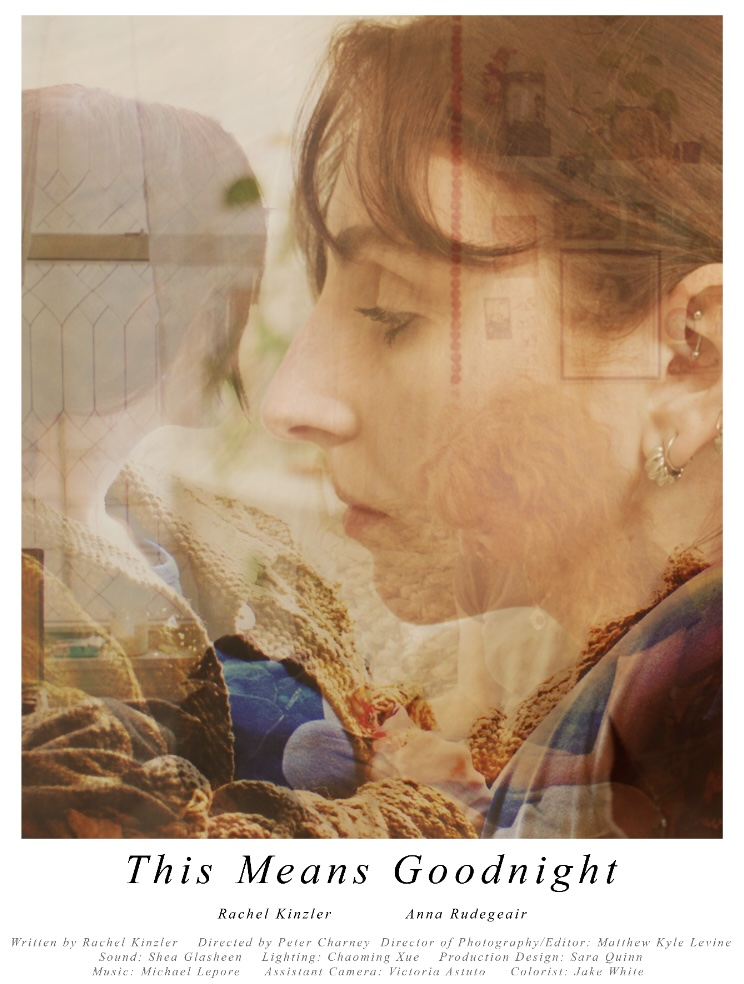
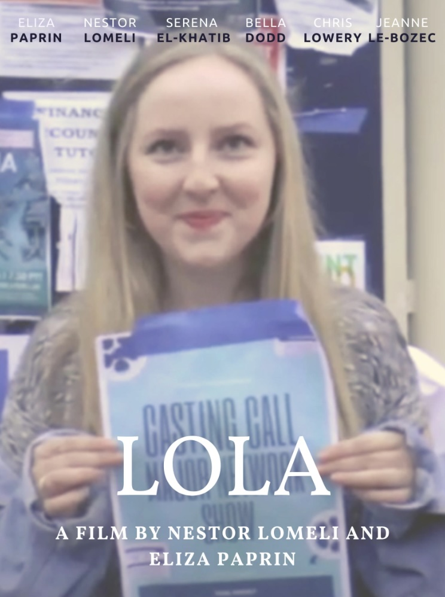

Eliza Paprin
I'm a Los Angeles-based film producer passionate about social impact storytelling, comedy, and at times the insersection of both. I love stories that entertain while also creating conversation and lasting emotional impact.
Selected work
Projects
-

Producer · 2025 · Short filmIdyll
Beverly Hills FF · Atlanta Shortsfest · Florida FF 2026 -

Producer · DocumentaryWhere We Played
Short Documentary -

Creator · Writer · Producer · OngoingNot Like Other Girls
YouTube original series -

Assistant Director & Producer · 2024 · TheaterDry Land
Atwater Village Theatre, Los Angeles -

Associate Producer · 2024 · Short filmThis Means Goodnight
Dances with Films — East Coast Premiere -

Co-Director · Writer · Producer · Actress · 2022Lola
Campus Movie Fest · Silver Tripod — Best Actress
Additional credits
- 2025 Chain NYC Film Festival — official selection · festival page ↗
- Marty Supreme × NBA on ESPN promo — production assistant · watch on YouTube ↗
Experience
Where I've worked
-
Post PA · Bonch Post
- Support the owner of Bonch Post across multiple projects from ingest through final delivery.
- Manage media ingest, project setup, and shared-drive organization so editors and assistant editors have a clean runway.
- Coordinate schedules, vendor communication, and client review sessions to keep post timelines on track.
- Prepare exports, QC cuts, and handle deliveries across multiple specs and platforms.
- Facilitate handoffs between editorial, color, sound, and finishing departments.
-
Independent Film Producer
- Producing slate including Idyll, Where We Played, This Means Goodnight, Dry Land, and more.
- Oversee the full scope of creative production — from script development and budgeting through production and post.
- Develop and maintain production schedules, call sheets, budget trackers, and project documentation.
- Oversee contracts, permits, and vendor agreements; track approvals and payments through completion.
- Manage travel, locations, and on-site logistics while serving as the central liaison between talent, agencies, crew, and vendors.
- Recruit and hire crew members and secure name talent.
-
Development & Acquisitions Assistant · Zenosyne Media
- Provided high-level administrative support to the CEO of a female-led production company — rolling calls, complex calendars, inbox monitoring, and executive travel.
- Prepared daily agendas; served as primary point of contact for internal team and external partners.
- Coordinated creative meetings across departments and time zones; captured detailed notes and action items.
- Maintained organized digital filing systems for scripts, submissions, agreements, and development materials.
- Built and updated a comprehensive database of incoming submissions, talent relationships, and industry contacts.
-
PR Coordinator, Entertainment · Cashmere Agency
- Supported one SVP and two senior directors at a Los Angeles entertainment agency — rolling calls, scheduling, meeting agendas and notes, travel booking, expense and invoice processing, and calendar management.
- Contributed to multicultural campaigns for Sony Pictures, Apple TV+, Universal Pictures, and Netflix — including Spider-Man: Across the Spider-Verse, The Woman King, Nope, and You People.
- Drafted and coordinated pitches; secured high-level editorial placements including magazine covers and feature press.
- Built and maintained the agency's media and influencer database; created targeted press lists for pitching efforts.
About
I'm a Los Angeles-based producer and post-production assistant. I love collaborating with filmmakers to help fully realize their creative visions.
My background spans development, production, post-production, and entertainment publicity, giving me experience with every stage of the filmmaking process. From coordinating executives and managing productions to supporting editorial workflows in post, I’m drawn to the balance between creative storytelling and the systems that keep a project moving. I’m especially passionate about socially driven stories.My recent projects include Idyll, Where We Played and the stage production of Dry Land at Atwater Village Theatre — all of which deal with currently pressing social issues.
Education
Emory University
Bachelor of Arts, Film Studies — August 2020
Atlanta, GA
- Henry L. Bowdoin Scholarship (merit-based)
- Friends of Theater Emory Grant
Contact
Let's talk.
Open to producing, coordinator, and video-production roles in LA. I would love to hear from you!